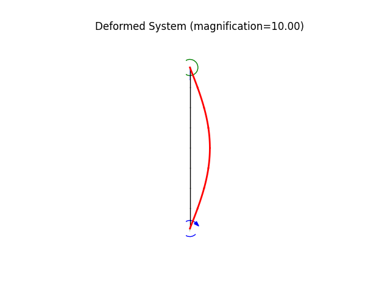

Note
Go to the end to download the full example code
Buckling of a vertical beam with pin-pin support
modeled using a 2D frame element
|
| P
v
x o ... support
I
x ... node
I
x ... node
^ ... support
x ..... node
I ... frame element
<-- ... applied force
^ ..... pin support
o ..... roller support
degrees of freedom:
0 ... horizontal displacement
1 ... vertical displacement
2 ... rotation, theta
N = 2 |
number of elements |
L = 100.0 |
column length |
EA = 2000000.0 |
axial stiffness |
EI = 21000.0 |
flexural stiffness |
w = 0.1 |
applied lateral load |
Author: Peter Mackenzie-Helnwein
from femedu.examples.Example import *
from femedu.domain import *
from femedu.solver.NewtonRaphsonSolver import *
from femedu.elements.finite.Frame2D import *
from femedu.materials.ElasticSection import *
class ExampleFrame02(Example):
def problem(self):
# initialize a system model
N = 8 # number of elements
L = 100.0
E = 20000.
EA = 2000000.0
EI = 210000.0
w = -0.1
params = {'E': E, 'A': EA/E, 'I': EI/E}
model = System()
model.setSolver(NewtonRaphsonSolver())
# create nodes
nd0 = Node(0.0, 0.0)
model += nd0
ndi = nd0
for i in range(N):
# nodes
ndj = Node( 0.0, (i+1)*L/N )
model += ndj
# elements
elem = Frame2D(ndi, ndj, ElasticSection(params))
elem.setDistLoad(w)
model += elem
ndi = ndj
# define support(s)
nd0.fixDOF('ux', 'uy') # horizontal and vertical support bottom end
ndi.fixDOF('ux') # horizontal support top end
# add loads
# .. load only the upper nodes
Pcr = np.pi**2 * EI / L**2
ndi.setLoad((-0.5*Pcr,), ('uy',))
# show model information
print(model)
model.solve(verbose=True)
model.report()
model.plot(factor=10.0, filename="frame2_deformed.png")
model.beamValuePlot("F", filename="frame2_force.png")
model.beamValuePlot("V", filename="frame2_shear.png")
model.beamValuePlot("M", filename="frame2_moment.png")
return
Run the example by creating an instance of the problem and executing it by calling Example.run()
if __name__ == "__main__":
ex = ExampleFrame02()
ex.run()
- 
System object
Node_178(x=[0. 0.], u=None)
Node_179(x=[ 0. 12.5], u=None)
Node_180(x=[ 0. 25.], u=None)
Node_181(x=[ 0. 37.5], u=None)
Node_182(x=[ 0. 50.], u=None)
Node_183(x=[ 0. 62.5], u=None)
Node_184(x=[ 0. 75.], u=None)
Node_185(x=[ 0. 87.5], u=None)
Node_186(x=[ 0. 100.], u=None)
Frame2D(Node_178, Node_179, ElasticSection(Material)({'E': 20000.0, 'A': 100.0, 'I': 10.5, 'nu': 0.0, 'fy': 1e+30}))
Frame2D(Node_179, Node_180, ElasticSection(Material)({'E': 20000.0, 'A': 100.0, 'I': 10.5, 'nu': 0.0, 'fy': 1e+30}))
Frame2D(Node_180, Node_181, ElasticSection(Material)({'E': 20000.0, 'A': 100.0, 'I': 10.5, 'nu': 0.0, 'fy': 1e+30}))
Frame2D(Node_181, Node_182, ElasticSection(Material)({'E': 20000.0, 'A': 100.0, 'I': 10.5, 'nu': 0.0, 'fy': 1e+30}))
Frame2D(Node_182, Node_183, ElasticSection(Material)({'E': 20000.0, 'A': 100.0, 'I': 10.5, 'nu': 0.0, 'fy': 1e+30}))
Frame2D(Node_183, Node_184, ElasticSection(Material)({'E': 20000.0, 'A': 100.0, 'I': 10.5, 'nu': 0.0, 'fy': 1e+30}))
Frame2D(Node_184, Node_185, ElasticSection(Material)({'E': 20000.0, 'A': 100.0, 'I': 10.5, 'nu': 0.0, 'fy': 1e+30}))
Frame2D(Node_185, Node_186, ElasticSection(Material)({'E': 20000.0, 'A': 100.0, 'I': 10.5, 'nu': 0.0, 'fy': 1e+30}))
norm of the out-of-balance force: 1.0370e+02
norm of the out-of-balance force: 1.6462e+00
norm of the out-of-balance force: 1.5379e-10
+
System Analysis Report
=======================
Nodes:
---------------------
Node_178:
x: [0. 0.]
fix: ['ux', 'uy']
u: [ 0. 0. -0.03940975]
Node_179:
x: [ 0. 12.5]
u: [ 0.47907861 -0.00064769 -0.03620643]
Node_180:
x: [ 0. 25.]
u: [ 0.88199225 -0.00129539 -0.02745697]
Node_181:
x: [ 0. 37.5]
u: [ 1.14899475 -0.00194308 -0.01475577]
Node_182:
x: [ 0. 50.]
u: [ 1.24230366e+00 -2.59077116e-03 4.18404301e-15]
Node_183:
x: [ 0. 62.5]
u: [ 1.14899475 -0.00323846 0.01475577]
Node_184:
x: [ 0. 75.]
u: [ 0.88199225 -0.00388616 0.02745697]
Node_185:
x: [ 0. 87.5]
u: [ 0.47907861 -0.00453385 0.03620643]
Node_186:
x: [ 0. 100.]
fix: ['ux']
P: [ 0. -103.63084621 0. ]
u: [ 0. -0.00518154 0.03940975]
Elements:
---------------------
Frame2D_294: nodes ( Node_178 Node_179 )
material: ElasticSection
internal forces: f0=-103.63 V0=4.37 M0=1.30 fl=-103.63 Vl=4.37 Ml=105.64 Pw=-0.62 Mw=-1.30
Frame2D_295: nodes ( Node_179 Node_180 )
material: ElasticSection
internal forces: f0=-103.63 V0=3.12 M0=105.64 fl=-103.63 Vl=3.12 Ml=186.45 Pw=-0.62 Mw=-1.30
Frame2D_296: nodes ( Node_180 Node_181 )
material: ElasticSection
internal forces: f0=-103.63 V0=1.87 M0=186.45 fl=-103.63 Vl=1.87 Ml=237.56 Pw=-0.62 Mw=-1.30
Frame2D_297: nodes ( Node_181 Node_182 )
material: ElasticSection
internal forces: f0=-103.63 V0=0.62 M0=237.56 fl=-103.63 Vl=0.62 Ml=255.04 Pw=-0.62 Mw=-1.30
Frame2D_298: nodes ( Node_182 Node_183 )
material: ElasticSection
internal forces: f0=-103.63 V0=-0.63 M0=255.04 fl=-103.63 Vl=-0.63 Ml=237.56 Pw=-0.62 Mw=-1.30
Frame2D_299: nodes ( Node_183 Node_184 )
material: ElasticSection
internal forces: f0=-103.63 V0=-1.88 M0=237.56 fl=-103.63 Vl=-1.88 Ml=186.45 Pw=-0.62 Mw=-1.30
Frame2D_300: nodes ( Node_184 Node_185 )
material: ElasticSection
internal forces: f0=-103.63 V0=-3.13 M0=186.45 fl=-103.63 Vl=-3.13 Ml=105.64 Pw=-0.62 Mw=-1.30
Frame2D_301: nodes ( Node_185 Node_186 )
material: ElasticSection
internal forces: f0=-103.63 V0=-4.38 M0=105.64 fl=-103.63 Vl=-4.38 Ml=1.30 Pw=-0.62 Mw=-1.30
Total running time of the script: ( 0 minutes 0.632 seconds)